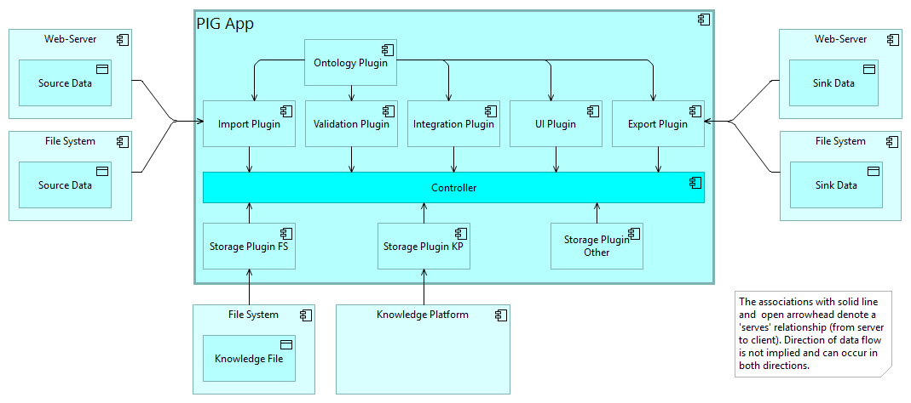

PIG App
This is the concept and design of the PIG App which is a CASCaRA reference implementation used to validate the standard in preparation.
The model gives an overview of the use-cases and the architecture, whereas further details are developed via GitHub issues. The planning is done with a GitHub project.
CASCaRA is a project to standardize collaboration in systems engineering with respect to data format and ontology. A Request for Proposal (RFP) has been accepted by OMG in December 2024. Information in different formats and from diverse sources are transformed and integrated to a common knowledge graph.
A publicly available reference implementation shall validate the concepts of the standard as developed by the CASCaRA submission team. Validation is successful, if real-world data is ingested and the information needs of all users in the product lifecycle are met. Users and software vendors are given the opportunity to influence the project to assure their ideas are taken aboard. A joint effort on fundamental features (where differentiation isn't possible anyways) avoids duplicate work, improves quality and assures interoperability.
The reference implementation addresses the following aspects:
- Check data format and constraints according to the CASCaRA Metamodel to assure data quality.
- Persistently store and retrieve PIG data using the standardized API (to be defined).
- View and edit CASCaRA data in a web-browser.
- Transform input data with the formats ReqIF, SysML v1 and v2, STEP and FMI/SSP. Other input formats may follow.
- Integrate input data with different formats to an interwoven knowledge graph.
- Create output data with the formats RDF/Turtle, JSON-LD and XHTML.
- Provide a set of standard queries ('competency questions') that work for all data complying with the meta-model.
- Bring the data into a standardized form to facilitate machine learning and AI applications.
Major requirements (capabilities and characteristics) must be satisfied:
- Separation of Concerns: Syntax and Semantics are separated, so that no software updates are needed, when the ontology evolves over time.
- Design for transformation: The PIG metamodel (‘magic tetrahedron’) assures loss-less transformation between RDF/OWL (Knowledge Graphs), GQL (Property Graphs) and Object-oriented Programming.
- Federation: RDF and JSON-LD support dataspaces with federated data under full control of the respective owners.
- Multi-Format Support: JSON-LD, XML, RDF/Turtle and GQL/Cypher supporting in a wide range of technologies.
- Comply with web-technology and avoid proprietary formats.
- Extend the software using a documented, if possible standardized plug-in mechanism.
This model is authored with Archi using the ArchiMate 3.2 notation, then transformed to SpecIF via ArchiMate Open Exchange file format and then transformed to HTML. The PIG App will support a similar workflow (among others) for the source data formats chosen.
SpecIF:Views
▣ Validation Process
A process to validate the conceptional and technical choices made by the standard in preparation. This is preliminary and needs further discussion and detailing with the target users. Ultimately, the standard must satisfy their use-cases and needs in general.
Subject to validation:
- Has the CASCaRA Metamodel enough expressive power to deal with real-world data?
- Can the data be transformed between RDF/Turtle, JSON-LD and GQL without loss? In all directions and in a full round-trip?
- Are the transformation results consistent, complete, comprehensible and finally useful?
- Can the user's 'competency questions' be satisfactorily answered?

▣ Module Architecture
The top-level module architecture of the PIG App embedded in its sytem context.

▣ Import Processing
Different paths of import processing of the PIG App are shown. They correspond to the edges of the Magic Tetrahedron, which defines the sweet spot where round-trip transformations between RDF, JSON-LD, Object-oriented Data and GQL are possible without loss of information.
The input formats defined have different purpose or strength:
| Category | Format | Purpose and Strength |
|---|---|---|
| Processing | OO Classes | Data Processing, Version & Configuration Management, Multi-user Operation |
| Processing | JSON | Equivalent with the above for schema checking, storage |
| Exchange | PIG JSON-LD | Higher level graph language for API and LD-Processors: Entities and relationships as self-contained objects with URI, standardized type and designated values, explicit, easy to transform |
| Exchange | PIG XML | Equivalent with the above for users preferring the XML ecosystem |
| Knowledge Graph | RDF/OWL Turtle | For use in the RDF ecosystem: Triple-Stores, SPARQL, SHACL, reasoning, visualization, elegant, compact, needs reasoning to uncover implicit meaning, low level graph („Graph Assembly Language“) |
| Knowledge Graph | RDF/OWL JSON-LD | Not planned, as it is redundant with the above |
| Knowledge Graph | RDF/OWL XML | Equivalent with the above for users preferring the XML ecosystem |
| Property Graph | GQL, Cypher | For use in the ecosystem of Labelled Property Graphs: Graph Databases, superior performance, visualization |

Business
□ CASCaDE Validation Process
□ Create Test-Data
Create test-data in original format as produced by popular authoring systems of the domain, for example IBM DOORS for requirement management or Cameo for systems engineering.
Initially, test-data should be small and cover relevant and typical aspects of the domain to drive and validate the development of transformations. Later on, real or near-real project data 'from the field' with growing complexity should be supplied.
□ Apply Competency Question
Once transformed to RDF/Turtle, still according to the CASCaRA Metamodel, user-defined competency questions shall be applied to the test-data. Those queries shall validate that the graph fulfills the information needs of the various user roles accessing the data. An important criterion is that the same (i.e. standard) queries yield the desired results with data from different sources. Only then, normalization with respect to syntax and semantics is successful. It is expected, however, that the competency questions (the queries) depend on the ontology with the the current set of preferred terms.
○ Business Use-Case
A set of use-cases describing the user's need. Must be exemplary (concrete), relevant and representative.
□ Check Schema, Consistency and Completeness
Once transformed according to the CASCaRA Metamodel, the data shall be checked with respect to schema (shape, format), consistency (constraints) and completeness. Both formally and by expert inspection.
□ Create CASCaRA Subgraph
Input information as provided by various authoring tools often comes in hierarchical order. Whatever the input format is, it is transformed to a subgraph complying with the CASCARA Metamodel.
□ Weave Subgraph into Graph
A subgraph transformed form input data is first mapped to the CASCaRA Ontology, checked by schema and constraints and then integrated in the common Graph.
○ CASCaRA Graph
The CASCaRA Graph integrating partial information from different sources. It complies with the CASCARA Metamodel.
○ Partial Information
Data provided by various authoring tools such as System Engineering Modeling Tools, Mechanical or Electrical CAD Tools. All are partial information concerning the same product and shall be analyzed and used in a common context.
Application
□ PIG App
A web application for creating, reading, updating and deleting data elements. The app is configured by the classes loaded at initialization time. The classes govern the choice and the dialog layout for modifying the data. Thus, the same software is used for more or less complex applications.
The architecture includes a plugin mechanism to allow the deployment of new transformations or storage adapters without building and deploying a complete new image, for details see 'Design Plugin Mechanism'.
A major challenge is an optimal design of the programming class structure ('scaffold'), the representation in JSON-LD, RDF/Turtle and GQL according to the CASCaRA Metamodel. Goal is to allow loss-less transformations between all representations. For details see Optimize the 'magic tetrahedron'.
Details of the development, build, integration and deployment environment are discussed in 'Select Development Environment and Programming Language'.
Further aspects:
- Reporting Interface (e.g. Power-BI), server-side per API or client-side per file (export plugin).
- Permission Management
□ Knowledge Platform
Consider to use a backend with:
- API4KP Knowledge Artifact Repository API
- API4KP Knowledge Asset Repository API
□ Controller
The controller is the 'main' component and is in charge of managing the execution of requested services in reaction on user or server events. In the easiest case ES promises are used and the scheduling is left to the event queuing of the execution environment. But certain services may require coordination or user feedback (via spinner or log message, for example). So it is the responsibility of the controller to enable and disable elements creating events to maintain the integrity of the app and the data.
Is usually provided by the application framework. An option is to implement an event dispatcher controlled by a state-machine.
□ Storage Plugin KP
Store a subgraph in or retrieve it from a knowledge platform.
○ Knowledge File
A subgraph represented as RDF/Turtle or JSON-LD.
□ File System
A network file system. Consider to use
- Windows/MacOS/Linux NFS
- Samba
- Git
□ Storage Plugin FS
Store a subgraph in or retrieve it from a file system.
□ Storage Plugin Other
Store a subgraph in or retrieve it from any other storage system as required.
□ Export Plugin
Transforms a selected subgraph from the internal data format according to the PIG metamodel to a desired output format.
The following transformations are planned for validating the approach (i.e. the standard to submit):
□ Import Plugin
Transforms a source data format to the internal data format according to the CASCaRA Metamodel. A full transformation of the source data may not be necessary for the given use-cases, so emphasis is put on the relevant entities and relationships of the source data.
Transformations may use:
- XSLT in case of XML source data
- SPARQL in case of RDF source data
- Scripting
The following transformations are planned for validating the approach (the standard tp submit):
□ Integration Plugin
Integrates a new subgraph with the existing graph, e.g. by combining nodes representing the 'same' artifact. Two artefacts are considered the same, if class and title are equal. A preliminary decision has been taken to keep the original nodes and to create an 'umbrella' node pointing to two or more nodes of the same artifact.
□ UI Plugin
User Interface, such as
- viewer,
- editor by forms or diagramming.
The user-interface is class-driven, i.e.the details of the entity, relationship or organizer classes with their respective property classes determine the UI. For example, an editing form for a class with three property classes will have 3 fields expecting input according to its dataype and range. Or a graphical editor for a UML interaction diagram will will present a tailored pallette with drawing rules for interaction diagrams.
□ Validation Plugin
Validates a package or a collection of packages, with
- schema checking
- constraint/consistency checking.
□ Web-Server
A standard web-server used for publication and exchange of information.
○ Source Data
The most general term for data ingested by the PIG App from previous processing steps.
○ Sink Data
The most general term for data produced by the PIG App for further processing.
□ Triple-Store
A standard database for knowledge graphs, e.g. Apache Fuseki.
○ Test Data [RDF]
Test data in RDF/Turtle format to allow further processing and reasoning with tools of the RDF ecosystem.
○ Test Data [Original]
Test data in a format provided by an Original Authoring System.
□ Original Authoring System
A system to create and maintain information somewhere in the product lifecycle. For example IBM DOORS for requirements management or Dassault Cameo for systems engineering.
□ Ontology Plugin
The ontology plugin provides services such as Assign Ontology Class.
○ input.reqif
Input data in ReqIF format. It is assumed that it complies with the OMG Standard Requirements Interchange Format (ReqIF) and with the Prostep ivip Implementation Guideline ReqIF.
□ Read File
Read a file from local disk or from URL.
□ XSLT Engine
An engine performing a transformation using the Extensible Stylesheet Language (XSL).
○ reqif-to-pig.xsl
A XSL stylesheet to extract relevant data from a ReqIF file. It is assumed that the source file to transform complies with the OMG Standard Requirements Interchange Format (ReqIF) and with the Prostep ivip Implementation Guideline ReqIF.
The fact that the ReqIF Implementation Guideline proposes certain attribute names as a convention, but no names for the entities (called OBJECT-TYPES) themselves, is a challenge for semantic interoperability. However, daily practice has adopted a number of entity names which can be included in the any-to.pig.mvf to find appropriate ontology classes. It is advised to design the XSL stylesheet for ReqIF in a way that the LONG-NAME of all OBJECT-TYPES is taken as entity class name and to leave all mapping with ontology terms to a subsequent process step, see Assign Ontology Classes.
□ MVF Engine
A Multi-Vocabulary-Facility mapping terms of multiple domain languages to the CASCaRA ontology terms and vice versa. The OMG Standard Multiple Vocabulary Facility (MVF) is partially implemented for that purpose.
○ any-to-pig.mvf
The data for the Multi-Vocabulary-Facility (MVF). It contains multiple vocabularies in domain and national languages plus standardized terms called 'concepts' with their synonym and antonym relationships. The concepts correspond to the classes of the CASCaRA Ontology. The relationships can be used for any-to-pig matching as well as the inverse.
○ Graph
The CASCaRA Graph integrating partial information from different sources. It complies with the CASCARA Metamodel.
○ input.pig.jsonld
Input data in XML format. A pattern compatible with the CASCaRA Metamodel is assumed. More precisely: It must comply with the CASCaRA JSON-LD Schemata.
See example files:
□ Transform to Subgraph (XSLT)
Transform the input data with its original XML format (such as ReqIF) to a CASCaRA compliant subgraph. A stylesheet per input format such as reqif-to-pig.xsl is used. It is advised that the stylesheet is designed to keep the original terminology, so that the transformation is as generally applicable as possible and to assign CASCaRA Ontology classes in a subsequent process step.
○ input.pig.ttl
Input data in RDF Turtle format. A pattern compatible with the CASCaRA Metamodel is assumed to fully interpret the data.
See example files:
□ Integrate Subgraph
The final subgraph is integrated in the common Graph, so that data from different sources in various formats can be analysed in a common context. It is used for display, exchange and reference by other applications including AI agents.
□ Check CASCaRA JSON Schema
The subgraph with assigned ontology classes is checked to comply with the CASCARA Metamodel.
□ Assign Ontology Class
Input data compliant with the CASCARA Metamodel are matched with the CASCaRA Ontology using a MVF Engine using the synonyms and antonyms defined in any-to-pig.mvf.
□ SPARQL Engine
An engine performing a transformation using the SPARQL Protocol and RDF Query Language.
□ Transform to Subgraph (SPARQL)
Transform the input data with its original Turtle format to a CASCaRA compliant subgraph. SPARQ queries defined in reqif-to-pig.xsl are used.
○ input.pig.xml
Input data in XML format. A pattern compatible with the CASCaRA Metamodel is assumed.
See example files:
□ Transform XML to JSON
XML data compliant with the CASCaRA metamodel is transformed to the equivalent CASCaRA JSON-LD format.
□ Check Package Constraints
Package constraints are checked such as:
- Uniqueness of identifiers
- Availability of referenced classes
- Conformance with referenced classes
- Completeness of namespace definitions
- and many more.
□ Check CASCaRA JSON-LD Schema
Check input data with the CASCaRA JSON-LD Schemata.
○ Configuration Data
○ any-to-pig.sparql
A set of SPARQL Protocol and RDF Query Language queries to extract relevant information from RDF data having a pattern conforming with the CASCARA metamodel.
□ Check CASCaRA XML Schema
Check input data with the CASCaRA XML Schemata.
Model Elements (Glossary)
○ any-to-pig.mvf
The data for the Multi-Vocabulary-Facility (MVF). It contains multiple vocabularies in domain and national languages plus standardized terms called 'concepts' with their synonym and antonym relationships. The concepts correspond to the classes of the CASCaRA Ontology. The relationships can be used for any-to-pig matching as well as the inverse.
○ any-to-pig.sparql
A set of SPARQL Protocol and RDF Query Language queries to extract relevant information from RDF data having a pattern conforming with the CASCARA metamodel.
□ Apply Competency Question
Once transformed to RDF/Turtle, still according to the CASCaRA Metamodel, user-defined competency questions shall be applied to the test-data. Those queries shall validate that the graph fulfills the information needs of the various user roles accessing the data. An important criterion is that the same (i.e. standard) queries yield the desired results with data from different sources. Only then, normalization with respect to syntax and semantics is successful. It is expected, however, that the competency questions (the queries) depend on the ontology with the the current set of preferred terms.
□ Assign Ontology Class
Input data compliant with the CASCARA Metamodel are matched with the CASCaRA Ontology using a MVF Engine using the synonyms and antonyms defined in any-to-pig.mvf.
○ Business Use-Case
A set of use-cases describing the user's need. Must be exemplary (concrete), relevant and representative.
□ CASCaDE Validation Process
○ CASCaRA Graph
The CASCaRA Graph integrating partial information from different sources. It complies with the CASCARA Metamodel.
□ Check CASCaRA JSON-LD Schema
Check input data with the CASCaRA JSON-LD Schemata.
□ Check CASCaRA JSON Schema
The subgraph with assigned ontology classes is checked to comply with the CASCARA Metamodel.
□ Check CASCaRA XML Schema
Check input data with the CASCaRA XML Schemata.
□ Check Package Constraints
Package constraints are checked such as:
- Uniqueness of identifiers
- Availability of referenced classes
- Conformance with referenced classes
- Completeness of namespace definitions
- and many more.
□ Check Schema, Consistency and Completeness
Once transformed according to the CASCaRA Metamodel, the data shall be checked with respect to schema (shape, format), consistency (constraints) and completeness. Both formally and by expert inspection.
○ Configuration Data
□ Controller
The controller is the 'main' component and is in charge of managing the execution of requested services in reaction on user or server events. In the easiest case ES promises are used and the scheduling is left to the event queuing of the execution environment. But certain services may require coordination or user feedback (via spinner or log message, for example). So it is the responsibility of the controller to enable and disable elements creating events to maintain the integrity of the app and the data.
Is usually provided by the application framework. An option is to implement an event dispatcher controlled by a state-machine.
□ Create CASCaRA Subgraph
Input information as provided by various authoring tools often comes in hierarchical order. Whatever the input format is, it is transformed to a subgraph complying with the CASCARA Metamodel.
□ Create Test-Data
Create test-data in original format as produced by popular authoring systems of the domain, for example IBM DOORS for requirement management or Cameo for systems engineering.
Initially, test-data should be small and cover relevant and typical aspects of the domain to drive and validate the development of transformations. Later on, real or near-real project data 'from the field' with growing complexity should be supplied.
□ Export Plugin
Transforms a selected subgraph from the internal data format according to the PIG metamodel to a desired output format.
The following transformations are planned for validating the approach (i.e. the standard to submit):
□ File System
A network file system. Consider to use
- Windows/MacOS/Linux NFS
- Samba
- Git
○ Graph
The CASCaRA Graph integrating partial information from different sources. It complies with the CASCARA Metamodel.
□ Import Plugin
Transforms a source data format to the internal data format according to the CASCaRA Metamodel. A full transformation of the source data may not be necessary for the given use-cases, so emphasis is put on the relevant entities and relationships of the source data.
Transformations may use:
- XSLT in case of XML source data
- SPARQL in case of RDF source data
- Scripting
The following transformations are planned for validating the approach (the standard tp submit):
○ input.pig.jsonld
Input data in XML format. A pattern compatible with the CASCaRA Metamodel is assumed. More precisely: It must comply with the CASCaRA JSON-LD Schemata.
See example files:
○ input.pig.ttl
Input data in RDF Turtle format. A pattern compatible with the CASCaRA Metamodel is assumed to fully interpret the data.
See example files:
○ input.pig.xml
Input data in XML format. A pattern compatible with the CASCaRA Metamodel is assumed.
See example files:
○ input.reqif
Input data in ReqIF format. It is assumed that it complies with the OMG Standard Requirements Interchange Format (ReqIF) and with the Prostep ivip Implementation Guideline ReqIF.
□ Integrate Subgraph
The final subgraph is integrated in the common Graph, so that data from different sources in various formats can be analysed in a common context. It is used for display, exchange and reference by other applications including AI agents.
□ Integration Plugin
Integrates a new subgraph with the existing graph, e.g. by combining nodes representing the 'same' artifact. Two artefacts are considered the same, if class and title are equal. A preliminary decision has been taken to keep the original nodes and to create an 'umbrella' node pointing to two or more nodes of the same artifact.
○ Knowledge File
A subgraph represented as RDF/Turtle or JSON-LD.
□ Knowledge Platform
Consider to use a backend with:
- API4KP Knowledge Artifact Repository API
- API4KP Knowledge Asset Repository API
□ MVF Engine
A Multi-Vocabulary-Facility mapping terms of multiple domain languages to the CASCaRA ontology terms and vice versa. The OMG Standard Multiple Vocabulary Facility (MVF) is partially implemented for that purpose.
□ Ontology Plugin
The ontology plugin provides services such as Assign Ontology Class.
□ Original Authoring System
A system to create and maintain information somewhere in the product lifecycle. For example IBM DOORS for requirements management or Dassault Cameo for systems engineering.
○ Partial Information
Data provided by various authoring tools such as System Engineering Modeling Tools, Mechanical or Electrical CAD Tools. All are partial information concerning the same product and shall be analyzed and used in a common context.
□ PIG App
A web application for creating, reading, updating and deleting data elements. The app is configured by the classes loaded at initialization time. The classes govern the choice and the dialog layout for modifying the data. Thus, the same software is used for more or less complex applications.
The architecture includes a plugin mechanism to allow the deployment of new transformations or storage adapters without building and deploying a complete new image, for details see 'Design Plugin Mechanism'.
A major challenge is an optimal design of the programming class structure ('scaffold'), the representation in JSON-LD, RDF/Turtle and GQL according to the CASCaRA Metamodel. Goal is to allow loss-less transformations between all representations. For details see Optimize the 'magic tetrahedron'.
Details of the development, build, integration and deployment environment are discussed in 'Select Development Environment and Programming Language'.
Further aspects:
- Reporting Interface (e.g. Power-BI), server-side per API or client-side per file (export plugin).
- Permission Management
□ Read File
Read a file from local disk or from URL.
○ reqif-to-pig.xsl
A XSL stylesheet to extract relevant data from a ReqIF file. It is assumed that the source file to transform complies with the OMG Standard Requirements Interchange Format (ReqIF) and with the Prostep ivip Implementation Guideline ReqIF.
The fact that the ReqIF Implementation Guideline proposes certain attribute names as a convention, but no names for the entities (called OBJECT-TYPES) themselves, is a challenge for semantic interoperability. However, daily practice has adopted a number of entity names which can be included in the any-to.pig.mvf to find appropriate ontology classes. It is advised to design the XSL stylesheet for ReqIF in a way that the LONG-NAME of all OBJECT-TYPES is taken as entity class name and to leave all mapping with ontology terms to a subsequent process step, see Assign Ontology Classes.
○ Sink Data
The most general term for data produced by the PIG App for further processing.
○ Source Data
The most general term for data ingested by the PIG App from previous processing steps.
□ SPARQL Engine
An engine performing a transformation using the SPARQL Protocol and RDF Query Language.
□ Storage Plugin FS
Store a subgraph in or retrieve it from a file system.
□ Storage Plugin KP
Store a subgraph in or retrieve it from a knowledge platform.
□ Storage Plugin Other
Store a subgraph in or retrieve it from any other storage system as required.
○ Test Data [Original]
Test data in a format provided by an Original Authoring System.
○ Test Data [RDF]
Test data in RDF/Turtle format to allow further processing and reasoning with tools of the RDF ecosystem.
□ Transform to Subgraph (SPARQL)
Transform the input data with its original Turtle format to a CASCaRA compliant subgraph. SPARQ queries defined in reqif-to-pig.xsl are used.
□ Transform to Subgraph (XSLT)
Transform the input data with its original XML format (such as ReqIF) to a CASCaRA compliant subgraph. A stylesheet per input format such as reqif-to-pig.xsl is used. It is advised that the stylesheet is designed to keep the original terminology, so that the transformation is as generally applicable as possible and to assign CASCaRA Ontology classes in a subsequent process step.
□ Transform XML to JSON
XML data compliant with the CASCaRA metamodel is transformed to the equivalent CASCaRA JSON-LD format.
□ Triple-Store
A standard database for knowledge graphs, e.g. Apache Fuseki.
□ UI Plugin
User Interface, such as
- viewer,
- editor by forms or diagramming.
The user-interface is class-driven, i.e.the details of the entity, relationship or organizer classes with their respective property classes determine the UI. For example, an editing form for a class with three property classes will have 3 fields expecting input according to its dataype and range. Or a graphical editor for a UML interaction diagram will will present a tailored pallette with drawing rules for interaction diagrams.
□ Validation Plugin
Validates a package or a collection of packages, with
- schema checking
- constraint/consistency checking.
□ Weave Subgraph into Graph
A subgraph transformed form input data is first mapped to the CASCaRA Ontology, checked by schema and constraints and then integrated in the common Graph.
□ Web-Server
A standard web-server used for publication and exchange of information.
□ XSLT Engine
An engine performing a transformation using the Extensible Stylesheet Language (XSL).